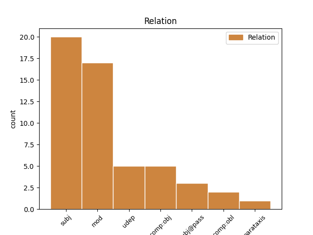

Distribution of features within this leaf

Agreement Rules sorted by frequency.
- When the dependent token is the subject(subj) of the head token, and the head token is AUX and the dependent token is ADJ.
1 Kan kunna AUX VB|PRS|AKT Mood=Ind|Tense=Pres|VerbForm=Fin|Voice=Act 0 _ _ _
2 inte _ _ _ _ 0 _ _ _
3 följande följande ADJ PC|PRS|UTR/NEU|SIN/PLU|IND/DEF|NOM Case=Nom|Tense=Pres|VerbForm=Part 1 subj _ _
4 vara _ _ _ _ 0 _ _ _
5 lösningen _ _ _ _ 0 _ _ _
6 ? _ _ _ _ 0 _ _ _
1 Den _ _ _ _ 0 _ _ _
2 strukturomdanande strukturomdanande ADJ PC|PRS|UTR/NEU|SIN/PLU|IND/DEF|NOM Case=Nom|Tense=Pres|VerbForm=Part 3 subj _ _
3 syftar syfta VERB VB|PRS|AKT Mood=Ind|Tense=Pres|VerbForm=Fin|Voice=Act 0 _ _ _
4 främst _ _ _ _ 0 _ _ _
5 till _ _ _ _ 0 _ _ _
6 att _ _ _ _ 0 _ _ _
7 skapa _ _ _ _ 0 _ _ _
8 större _ _ _ _ 0 _ _ _
9 ekonomisk _ _ _ _ 0 _ _ _
10 jämlikhet _ _ _ _ 0 _ _ _
11 mellan _ _ _ _ 0 _ _ _
12 medborgarna _ _ _ _ 0 _ _ _
13 , _ _ _ _ 0 _ _ _
14 dvs. _ _ _ _ 0 _ _ _
15 till _ _ _ _ 0 _ _ _
16 en _ _ _ _ 0 _ _ _
17 inkomstutjämning _ _ _ _ 0 _ _ _
18 . _ _ _ _ 0 _ _ _
1 Vi _ _ _ _ 0 _ _ _
2 varierar variera VERB VB|PRS|AKT Mood=Ind|Tense=Pres|VerbForm=Fin|Voice=Act 0 _ _ _
3 i _ _ _ _ 0 _ _ _
4 vårt _ _ _ _ 0 _ _ _
5 beteende _ _ _ _ 0 _ _ _
6 från _ _ _ _ 0 _ _ _
7 situation _ _ _ _ 0 _ _ _
8 till _ _ _ _ 0 _ _ _
9 situation _ _ _ _ 0 _ _ _
10 beroende beroende ADJ PC|PRS|UTR/NEU|SIN/PLU|IND/DEF|NOM Case=Nom|Tense=Pres|VerbForm=Part 2 mod _ _
11 på _ _ _ _ 0 _ _ _
12 vilka _ _ _ _ 0 _ _ _
13 andra _ _ _ _ 0 _ _ _
14 människor _ _ _ _ 0 _ _ _
15 som _ _ _ _ 0 _ _ _
16 finns _ _ _ _ 0 _ _ _
17 med _ _ _ _ 0 _ _ _
18 . _ _ _ _ 0 _ _ _
1 Sett se ADJ PC|PRF|NEU|SIN|IND|NOM Case=Nom|Definite=Ind|Gender=Neut|Number=Sing|Tense=Past|VerbForm=Part 5 mod _ _
2 ur _ _ _ _ 0 _ _ _
3 barnens _ _ _ _ 0 _ _ _
4 synpunkt _ _ _ _ 0 _ _ _
5 vore vara AUX VB|KON|PRT|AKT Mood=Sub|Tense=Past|VerbForm=Fin|Voice=Act 0 _ _ _
6 det _ _ _ _ 0 _ _ _
7 önskvärt _ _ _ _ 0 _ _ _
8 med _ _ _ _ 0 _ _ _
9 fler _ _ _ _ 0 _ _ _
10 deltidstjänster _ _ _ _ 0 _ _ _
11 för _ _ _ _ 0 _ _ _
12 småbarnsföräldrar _ _ _ _ 0 _ _ _
13 . _ _ _ _ 0 _ _ _
1 Om _ _ _ _ 0 _ _ _
2 du _ _ _ _ 0 _ _ _
3 inte _ _ _ _ 0 _ _ _
4 bryter _ _ _ _ 0 _ _ _
5 mot _ _ _ _ 0 _ _ _
6 förbuden _ _ _ _ 0 _ _ _
7 mot _ _ _ _ 0 _ _ _
8 omkörning _ _ _ _ 0 _ _ _
9 och _ _ _ _ 0 _ _ _
10 om _ _ _ _ 0 _ _ _
11 det _ _ _ _ 0 _ _ _
12 kan _ _ _ _ 0 _ _ _
13 ske _ _ _ _ 0 _ _ _
14 utan _ _ _ _ 0 _ _ _
15 fara _ _ _ _ 0 _ _ _
16 får _ _ _ _ 0 _ _ _
17 du _ _ _ _ 0 _ _ _
18 överskrida _ _ _ _ 0 _ _ _
19 en _ _ _ _ 0 _ _ _
20 varningslinje _ _ _ _ 0 _ _ _
21 vid _ _ _ _ 0 _ _ _
22 möte _ _ _ _ 0 _ _ _
23 med _ _ _ _ 0 _ _ _
24 gående _ _ _ _ 0 _ _ _
25 och _ _ _ _ 0 _ _ _
26 då _ _ _ _ 0 _ _ _
27 du _ _ _ _ 0 _ _ _
28 kör köra VERB VB|PRS|AKT Mood=Ind|Tense=Pres|VerbForm=Fin|Voice=Act 0 _ _ _
29 om _ _ _ _ 0 _ _ _
30 gående gå ADJ PC|PRS|UTR/NEU|SIN/PLU|IND/DEF|NOM Case=Nom|Tense=Pres|VerbForm=Part 28 comp:obj _ SpaceAfter=No
31 , _ _ _ _ 0 _ _ _
32 cyklist _ _ _ _ 0 _ _ _
33 eller _ _ _ _ 0 _ _ _
34 fordon _ _ _ _ 0 _ _ _
35 som _ _ _ _ 0 _ _ _
36 går _ _ _ _ 0 _ _ _
37 långsamt _ _ _ _ 0 _ _ _
38 eller _ _ _ _ 0 _ _ _
39 står _ _ _ _ 0 _ _ _
40 stilla _ _ _ _ 0 _ _ _
41 . _ _ _ _ 0 _ _ _
1 Ånggenererad ånggenererad ADJ PC|PRF|UTR|SIN|IND|NOM Case=Nom|Definite=Ind|Gender=Com|Number=Sing|Tense=Past|VerbForm=Part 7 subj _ _
2 ( _ _ _ _ 0 _ _ _
3 el _ _ _ _ 0 _ _ _
4 termogenererad _ _ _ _ 0 _ _ _
5 ) _ _ _ _ 0 _ _ _
6 , _ _ _ _ 0 _ _ _
7 alstrad alstra ADJ PC|PRF|UTR|SIN|IND|NOM Case=Nom|Definite=Ind|Gender=Com|Number=Sing|Tense=Past|VerbForm=Part 0 _ _ _
8 av _ _ _ _ 0 _ _ _
9 ångkraftverk _ _ _ _ 0 _ _ _
10 el _ _ _ _ 0 _ _ _
11 värmekraftverk _ _ _ _ 0 _ _ _
12 , _ _ _ _ 0 _ _ _
13 vilka _ _ _ _ 0 _ _ _
14 kan _ _ _ _ 0 _ _ _
15 drivas _ _ _ _ 0 _ _ _
16 med _ _ _ _ 0 _ _ _
17 kol _ _ _ _ 0 _ _ _
18 , _ _ _ _ 0 _ _ _
19 olja _ _ _ _ 0 _ _ _
20 el _ _ _ _ 0 _ _ _
21 atombränsle _ _ _ _ 0 _ _ _
22 . _ _ _ _ 0 _ _ _
1 Grundbeloppet _ _ _ _ 0 _ _ _
2 utgår utgå VERB VB|PRS|AKT Mood=Ind|Tense=Pres|VerbForm=Fin|Voice=Act 0 _ _ _
3 oberoende oberoende ADJ PC|PRS|UTR/NEU|SIN/PLU|IND/DEF|NOM Case=Nom|Tense=Pres|VerbForm=Part 2 udep _ _
4 av _ _ _ _ 0 _ _ _
5 bostadens _ _ _ _ 0 _ _ _
6 storlek _ _ _ _ 0 _ _ _
7 och _ _ _ _ 0 _ _ _
8 utrustning _ _ _ _ 0 _ _ _
9 . _ _ _ _ 0 _ _ _
1 Antalet _ _ _ _ 0 _ _ _
2 förvärvsarbetande förvärvsarbetande ADJ PC|PRS|UTR/NEU|SIN/PLU|IND/DEF|NOM Case=Nom|Tense=Pres|VerbForm=Part 3 subj@pass _ _
3 väntas vänta VERB VB|PRS|SFO Mood=Ind|Tense=Pres|VerbForm=Fin|Voice=Pass 0 _ _ _
4 växa _ _ _ _ 0 _ _ _
5 med _ _ _ _ 0 _ _ _
6 225000 _ _ _ _ 0 _ _ _
7 till _ _ _ _ 0 _ _ _
8 1985 _ _ _ _ 0 _ _ _
9 , _ _ _ _ 0 _ _ _
10 om _ _ _ _ 0 _ _ _
11 befolkningen _ _ _ _ 0 _ _ _
12 ökar _ _ _ _ 0 _ _ _
13 så _ _ _ _ 0 _ _ _
14 som _ _ _ _ 0 _ _ _
15 antagits _ _ _ _ 0 _ _ _
16 . _ _ _ _ 0 _ _ _
1 Men _ _ _ _ 0 _ _ _
2 ännu _ _ _ _ 0 _ _ _
3 finns _ _ _ _ 0 _ _ _
4 det _ _ _ _ 0 _ _ _
5 inget _ _ _ _ 0 _ _ _
6 svenskt _ _ _ _ 0 _ _ _
7 företag _ _ _ _ 0 _ _ _
8 som _ _ _ _ 0 _ _ _
9 frågar fråga VERB VB|PRS|AKT Mood=Ind|Tense=Pres|VerbForm=Fin|Voice=Act 0 _ _ _
10 den _ _ _ _ 0 _ _ _
11 arbetssökande arbetssökande ADJ PC|PRS|UTR/NEU|SIN/PLU|IND/DEF|NOM Case=Nom|Tense=Pres|VerbForm=Part 9 comp:obl _ _
12 när _ _ _ _ 0 _ _ _
13 denne _ _ _ _ 0 _ _ _
14 tror _ _ _ _ 0 _ _ _
15 att _ _ _ _ 0 _ _ _
16 han _ _ _ _ 0 _ _ _
17 fungerar _ _ _ _ 0 _ _ _
18 bäst _ _ _ _ 0 _ _ _
19 på _ _ _ _ 0 _ _ _
20 dygnet _ _ _ _ 0 _ _ _
21 . _ _ _ _ 0 _ _ _
1 De _ _ _ _ 0 _ _ _
2 äldre _ _ _ _ 0 _ _ _
3 rollmodellerna _ _ _ _ 0 _ _ _
4 är vara AUX VB|PRS|AKT Mood=Ind|Tense=Pres|VerbForm=Fin|Voice=Act 0 _ _ _
5 seglivade _ _ _ _ 0 _ _ _
6 , _ _ _ _ 0 _ _ _
7 bl.a. _ _ _ _ 0 _ _ _
8 beroende beroende ADJ PC|PRS|UTR/NEU|SIN/PLU|IND/DEF|NOM Case=Nom|Tense=Pres|VerbForm=Part 4 udep _ _
9 på _ _ _ _ 0 _ _ _
10 deras _ _ _ _ 0 _ _ _
11 förankring _ _ _ _ 0 _ _ _
12 i _ _ _ _ 0 _ _ _
13 tidig _ _ _ _ 0 _ _ _
14 socialisation _ _ _ _ 0 _ _ _
15 . _ _ _ _ 0 _ _ _
Disagree Examples:
1 När _ _ _ _ 0 _ _ _
2 inte _ _ _ _ 0 _ _ _
3 alla _ _ _ _ 0 _ _ _
4 hus _ _ _ _ 0 _ _ _
5 vid _ _ _ _ 0 _ _ _
6 en _ _ _ _ 0 _ _ _
7 gata _ _ _ _ 0 _ _ _
8 har _ _ _ _ 0 _ _ _
9 samma _ _ _ _ 0 _ _ _
10 postnummer _ _ _ _ 0 _ _ _
11 , _ _ _ _ 0 _ _ _
12 specificeras specificera VERB VB|PRS|SFO Mood=Ind|Tense=Pres|VerbForm=Fin|Voice=Pass 0 _ _ _
13 numren _ _ _ _ 0 _ _ _
14 på _ _ _ _ 0 _ _ _
15 det _ _ _ _ 0 _ _ _
16 här _ _ _ _ 0 _ _ _
17 sättet _ _ _ _ 0 _ _ _
18 ( _ _ _ _ 0 _ _ _
19 exemplet _ _ _ _ 0 _ _ _
20 hämtat hämta ADJ PC|PRF|NEU|SIN|IND|NOM Case=Nom|Definite=Ind|Gender=Neut|Number=Sing|Tense=Past|VerbForm=Part 12 parataxis _ _
21 från _ _ _ _ 0 _ _ _
22 Borås _ _ _ _ 0 _ _ _
23 ) _ _ _ _ 0 _ _ _
24 : _ _ _ _ 0 _ _ _
1 En _ _ _ _ 0 _ _ _
2 sådan _ _ _ _ 0 _ _ _
3 kontrollundersökning _ _ _ _ 0 _ _ _
4 utföres utföra VERB VB|PRS|SFO Mood=Ind|Tense=Pres|VerbForm=Fin|Voice=Pass 0 _ _ _
5 kostnadsfritt _ _ _ _ 0 _ _ _
6 , _ _ _ _ 0 _ _ _
7 förutsatt förutsatt ADJ PC|PRF|NEU|SIN|IND|NOM Case=Nom|Definite=Ind|Gender=Neut|Number=Sing|Tense=Past|VerbForm=Part 4 mod _ _
8 att _ _ _ _ 0 _ _ _
9 första _ _ _ _ 0 _ _ _
10 provet _ _ _ _ 0 _ _ _
11 inlämnats _ _ _ _ 0 _ _ _
12 enligt _ _ _ _ 0 _ _ _
13 anvisningarna _ _ _ _ 0 _ _ _
14 . _ _ _ _ 0 _ _ _
1 Det _ _ _ _ 0 _ _ _
2 är _ _ _ _ 0 _ _ _
3 sannolikt _ _ _ _ 0 _ _ _
4 att _ _ _ _ 0 _ _ _
5 var _ _ _ _ 0 _ _ _
6 femte _ _ _ _ 0 _ _ _
7 svensk _ _ _ _ 0 _ _ _
8 , _ _ _ _ 0 _ _ _
9 lågt _ _ _ _ 0 _ _ _
10 räknat räkna ADJ PC|PRF|NEU|SIN|IND|NOM Case=Nom|Definite=Ind|Gender=Neut|Number=Sing|Tense=Past|VerbForm=Part 15 mod _ SpaceAfter=No
11 , _ _ _ _ 0 _ _ _
12 under _ _ _ _ 0 _ _ _
13 den _ _ _ _ 0 _ _ _
14 tiden _ _ _ _ 0 _ _ _
15 skadas skada VERB VB|PRS|SFO Mood=Ind|Tense=Pres|VerbForm=Fin|Voice=Pass 0 _ _ _
16 i _ _ _ _ 0 _ _ _
17 trafiken _ _ _ _ 0 _ _ _
18 . _ _ _ _ 0 _ _ _
1 Till _ _ _ _ 0 _ _ _
2 detta _ _ _ _ 0 _ _ _
3 kommer komma VERB VB|PRS|AKT Mood=Ind|Tense=Pres|VerbForm=Fin|Voice=Act 0 _ _ _
4 de _ _ _ _ 0 _ _ _
5 dödade döda ADJ PC|PRF|UTR/NEU|PLU|IND/DEF|NOM Case=Nom|Number=Plur|Tense=Past|VerbForm=Part 3 subj _ _
6 och _ _ _ _ 0 _ _ _
7 skadade _ _ _ _ 0 _ _ _
8 som _ _ _ _ 0 _ _ _
9 inte _ _ _ _ 0 _ _ _
10 själva _ _ _ _ 0 _ _ _
11 åkte _ _ _ _ 0 _ _ _
12 bil _ _ _ _ 0 _ _ _
13 - _ _ _ _ 0 _ _ _
14 fotgängare _ _ _ _ 0 _ _ _
15 och _ _ _ _ 0 _ _ _
16 cyklister _ _ _ _ 0 _ _ _
17 . _ _ _ _ 0 _ _ _
1 Antalet _ _ _ _ 0 _ _ _
2 sysselsatta sysselsätta ADJ PC|PRF|UTR/NEU|PLU|IND/DEF|NOM Case=Nom|Number=Plur|Tense=Past|VerbForm=Part 15 subj@pass _ _
3 i _ _ _ _ 0 _ _ _
4 Stockholms _ _ _ _ 0 _ _ _
5 innerstad _ _ _ _ 0 _ _ _
6 , _ _ _ _ 0 _ _ _
7 den _ _ _ _ 0 _ _ _
8 stora _ _ _ _ 0 _ _ _
9 blå _ _ _ _ 0 _ _ _
10 stapeln _ _ _ _ 0 _ _ _
11 mitt _ _ _ _ 0 _ _ _
12 i _ _ _ _ 0 _ _ _
13 kartan _ _ _ _ 0 _ _ _
14 , _ _ _ _ 0 _ _ _
15 skall skola AUX VB|PRS|AKT Mood=Ind|Tense=Pres|VerbForm=Fin|Voice=Act 0 _ _ _
16 enligt _ _ _ _ 0 _ _ _
17 förslaget _ _ _ _ 0 _ _ _
18 hållas _ _ _ _ 0 _ _ _
19 oförändrat _ _ _ _ 0 _ _ _
20 vid _ _ _ _ 0 _ _ _
21 omkring _ _ _ _ 0 _ _ _
22 290000 _ _ _ _ 0 _ _ _
23 under _ _ _ _ 0 _ _ _
24 15-årsperioden _ _ _ _ 0 _ _ _
25 . _ _ _ _ 0 _ _ _